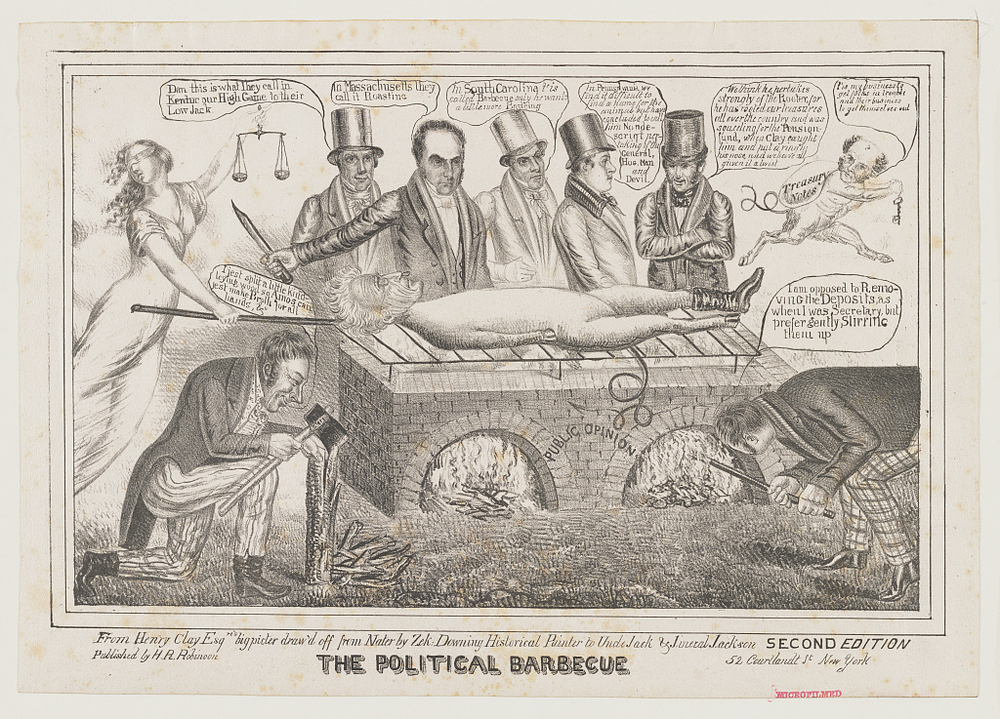
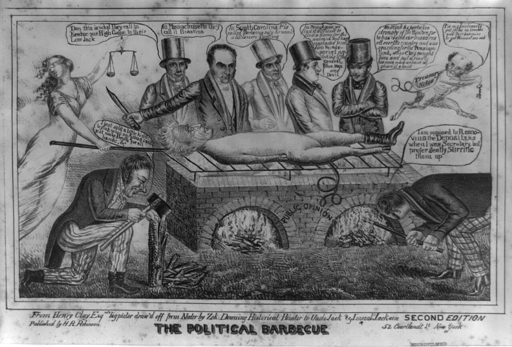

an eventpolitical barbecue
also: stump meeting · campaign barbecue · rally barbecue · the candidate's pig

The free feed a candidate or a party puts on to draw a crowd: a whole hog, or these days a pile of pork butts, cooked for whoever comes, with speeches or a rope line attached. It is as old as the republic in the Carolinas — the communal whole-hog barbecue fed political rallies in the colonial Carolinas and Virginia — and it has two living forms. In South Carolina the Galivants Ferry Stump Meeting in Horry County has gathered Democratic candidates on the Holliday family's land every second spring since 1880, descended from Wade Hampton's 1876 appearance there. In North Carolina the Mallard Creek church barbecue in Charlotte was the candidates' October stop from 1929 to 2024.
The story Cited · web-horry-history-galivants-ferry
Robert Moss finds the political barbecue an institution of the early republic and the whole-hog rally established in the colonies by the 1700s. In North Carolina the tradition runs through the pig pickin' — local parties and politicians still use one to draw people to meetings and rallies — and its cost is recorded in one sentence from 1983, when Rufus Edmisten, running for governor, was overheard saying he had eaten enough barbecue and was not going to eat any more. In South Carolina the form is the stump meeting. Wade Hampton, the Confederate general running for governor, spoke at Galivants Ferry in 1876 and was elected that year; in 1880 Joseph William Holliday, merchant and tobacco farmer, invited the county's Democratic candidates to speak at his store, and the meeting has been held there in the spring of every second year since, carried on by the Hollidays and grown into a statewide event with national candidates — the longest-running Democratic campaign-speech site in the country, by the county's marker and the community's own account; by 2004 it counted 128 years. Tradition holds — chicken bog and barbecue are the food of the day. Mallard Creek's Presbyterians did not plan a political stop; they planned to pay off a Sunday-school building in 1929, and the candidates came to the crowd. By 2015 the crowd was 20,000 and the guests had included a former vice-president; the church retired the barbecue in 2025. The Lexington Barbecue Festival's politics — two bills in 2006 to make it the state's official festival, defeated by the east, and a regional title in 2007 — are the same appetite turned on the food itself.
How it is done Cited · wp-whole-hog-barbecue
A hog or a pile of butts is cooked by a church, a club or a hired pit; the candidate pays, or the host does; plates are free or cheap; the speaking is from a stump, a flatbed or a stage, or there is no speaking at all and the candidates walk a rope line with fliers. The date is the calendar's: spring of an election year at Galivants Ferry, the fourth Thursday of October at Mallard Creek.
Today Cited · wp-whole-hog-barbecue
Galivants Ferry continues on its two-year cycle; Mallard Creek ended in 2025; the pig pickin' rally goes on wherever a county party has a cooker.
Facts
| state | both |
|---|---|
| when | election years; the weeks before a vote |
| status | open |
| region | The Carolinas, The American South |
| where | 34.0561, -79.2465 (town) · OpenStreetMap · open in maps Harvested · osm |
| links | Galivants Ferry, South Carolina — Wikipedia · Horry County Historical Society — the stump meeting marker |
| confidence | medium · needs verification · updated 2026-09-15 |
Not to be confused with
- fundraiser barbecue — Who pays. A political barbecue is free to the eater and paid for by the candidate or the party; a fundraiser sells the plate.
- Mallard Creek Barbecue — Mallard Creek was a church fundraiser the candidates attended; a political barbecue is the candidate's own.
Its kin
Who points back
Pictures
{kind=link}

{kind=link}

{kind=link}
![A state News Bureau sheet of four prints headed Barbeque, Braswell Plantation, Sept 1944. In one, several hundred people sit on plank benches among pines facing a low wooden platform where a man in shirtsleeves stands at the front and others sit in chairs behind him. Another looks the same crowd in the face, rows deep, cars parked in the trees behind. A third shows two mule wagons carrying people along a sand road. The fourth shows people sitting on the grass with plates, a man in overalls walking towards the camera carrying his.](../../images/political-barbecue/political-barbecue-speaking-at-the-barbecue-1944.jpg)
![A sepia photograph mounted on card with a ruled border. A shallow trench of coals runs away from the camera down the middle of the frame, and split pig carcasses lie flat along it in a long row, smoke drifting up. Four or five men in hats stand along the trench; the nearest works the meat with a long-handled tool. A white canvas awning on poles runs the length of the right-hand side, and a loose length of the same canvas sweeps across the bottom corner. A carriage wheel shows at the right edge. Bare ground, scattered trees and open country behind.](../../images/political-barbecue/political-barbecue-nc-barbecue-tarboro-1898.jpg)
Sources
- Barbecue: The History of an American Institution — Robert F. Moss, 2010
- Whole hog barbecue — Wikipedia · link
- Pig pickin' — Wikipedia · link
- Galivants Ferry, South Carolina — Wikipedia · link
- Galivant's Ferry Stump Meeting — historical marker text · link
- Pork & Politics Merge at Mallard Creek Presbyterian Church (Greg Lacour, February 2016, updated 2018) · link
- Mallard Creek Barbecue ends after 93 years (Kenneth Lee Jr., October 1, 2025) · link
- Lexington Barbecue Festival — Wikipedia · link
- OpenStreetMap — places tagged cuisine=barbecue in North Carolina and South Carolina · link
- Flickr Commons · link
- State Archives of North Carolina on Flickr Commons · link
- Department of Conservation and Development, Travel Information Division Photograph Collection · link
- Lena Martin Photograph Collection — Lena Pennington Martin (1877-1950) · link
- DigitalNC · link
Where it came from: Cited a source we name · Harvested pulled from an open dataset · Tradition what the tradition says, hedged · Inference this project's reasoning · Field somebody stood there. This record as JSON.